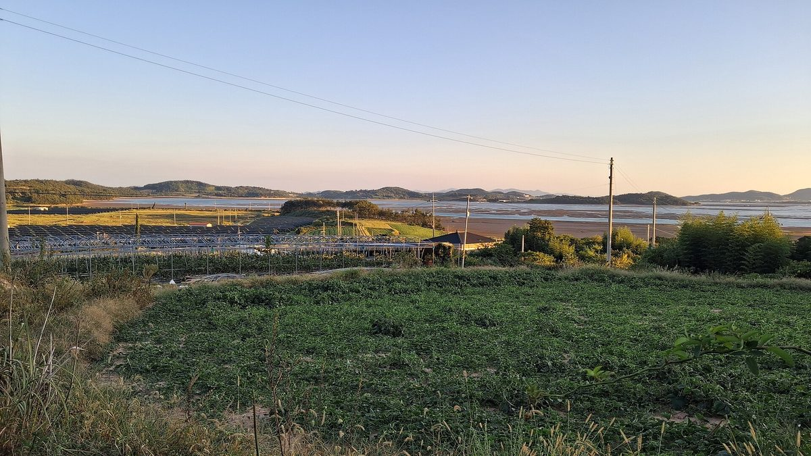

전남연구원 신안 발전 구상 보고서, 햇빛연금·바람연금을 기본소득형 에너지복지로 키우자 제안…햇빛연금 2025년 75억 원에서 2030년 130억 원 목표

해상풍력 2030년 3.5GW·2035년 8.2GW, 태양광 2030년 1,200MW 목표 담아…주민참여 협동조합·지역활성화펀드 연계, 권역별 해상풍력 유지보수 거점·RE100 산업단지도 제시
전남연구원이 '신안군 발전 구상' 보고서에서 신안의 햇빛연금과 바람연금을 기본소득형 에너지복지로 키우고 주민참여 협동조합·지역활성화펀드와 연계하자고 제안했다. 신안은 햇빛연금으로 2025년 75억 원을 지급했으며, 보고서는 이를 2030년 130억 원까지 늘리는 목표를 담았다. 재생에너지 목표로는 해상풍력을 2030년 3.5GW, 2035년 8.2GW 규모로 조성하고 태양광 발전용량을 2025년 650MW에서 2030년 1,200MW로 늘리는 방향이 제시됐다. 보고서는 북부 지도 점암, 중부 우목도항, 남부 원평항을 권역별 해상풍력 유지보수(O&M) 거점으로 키우고, RE100 전용 산업단지와 재생에너지 기업 클러스터, 가상발전소(VPP)·수요반응(DR)·차세대 배전망(ADMS)을 활용한 AI 분산전력망 실증특구를 함께 추진하자고 했다. 이 구상은 '섬과 자연, 군민이 하나되는 혁신의 SPARK, 신안'을 비전으로 재생에너지 지역환원, 세계자연유산 갯벌, 블루푸드·푸드테크, 섬 교통망 등 7개 핵심과제를 담은 연구원의 제안으로, 지급 대상 수나 1인당 금액 같은 햇빛연금 세부 내용은 공개되지 않았다.
시민에너지 관점
한 해 75억 원의 햇빛연금은 재생에너지 수익이 주민 몫으로 돌아올 수 있다는 것을 이미 보여 줬고, 이제 과제는 8.2GW 해상풍력처럼 규모가 커지는 사업에서도 그 몫을 지키는 일이다. 대형 해상풍력은 자본 규모가 커 주민이 주인이 되기 어렵다는 우려가 있지만, 영국 스코틀랜드 오크니 제도에서는 섬 공동체들이 풍력발전기를 직접 소유하고 그 수익을 공동체 기금으로 돌려 섬 주민의 생활 서비스에 써 왔다. 연금이 개별 사업의 배당에만 기대면 사업 조건이 바뀔 때 흔들릴 수 있지만, 주민 협동조합이 지분을 갖고 지역펀드로 수익을 묶어 두면 섬의 자산으로 오래 남는다. 보고서가 제안한 협동조합·지역펀드 연계를 실제 계획으로 옮겨, 해상풍력 설계 단계부터 주민 지분을 처음부터 넣어야 한다.
출처: 남도일보 2026-10-27 조태훈 원문 보기
全南研究院の新安発展構想報告書、太陽光年金・風力年金をベーシックインカム型エネルギー福祉に育てるよう提案…太陽光年金を2025年の75億ウォンから2030年に130億ウォンへ
洋上風力は2030年3.5GW・2035年8.2GW、太陽光は2030年1,200MWの目標…住民参加型協同組合・地域活性化ファンドと連携、圏域ごとの洋上風力保守拠点やRE100産業団地も提示
全南研究院は「新安郡発展構想」報告書で、新安郡の太陽光年金（ヘッピッ年金）と風力年金（パラム年金）をベーシックインカム型のエネルギー福祉に高め、住民参加型の協同組合や地域活性化ファンドと連携させるよう提案した。新安郡は太陽光年金として2025年に75億ウォンを支給しており、報告書はこれを2030年に130億ウォンまで増やす目標を盛り込んだ。再生可能エネルギーの目標としては、洋上風力を2030年に3.5GW、2035年に8.2GW規模まで整備し、太陽光の発電容量を2025年の650MWから2030年に1,200MWへ拡大する方向が示された。報告書は北部の智島・占岩、中部の牛木島港、南部の院坪港を圏域ごとの洋上風力の保守（O&M）拠点として育成し、RE100専用産業団地や再生可能エネルギー企業クラスター、仮想発電所（VPP）・デマンドレスポンス（DR）・次世代配電網（ADMS）を活用したAI分散電力網の実証特区もあわせて進めるよう求めた。この構想は「島と自然、郡民がひとつになる革新のSPARK、新安」をビジョンに、再生可能エネルギーの地域還元、世界自然遺産の干潟、ブルーフード・フードテック、島の交通網など7つの重点課題をまとめた研究院の提案で、支給対象者数や1人当たりの金額など太陽光年金の詳細は明らかにされていない。
市民エネルギーの視点
年間75億ウォンの太陽光年金は、再生可能エネルギーの収益が住民の取り分として戻ってくることをすでに示しており、これからの課題は8.2GWの洋上風力のように規模の大きな事業でもその取り分を守ることだ。大規模な洋上風力は資本が大きく住民が主人になるのは難しいという懸念もあるが、英国スコットランドのオークニー諸島では島の共同体が風力発電機を直接所有し、その収益を共同体基金に回して島民の生活サービスに使ってきた。年金が個々の事業の配当だけに頼れば事業条件が変わったときに揺らぎかねないが、住民の協同組合が持ち分を持ち、地域ファンドで収益をまとめておけば島の資産として長く残る。報告書が提案した協同組合・地域ファンドとの連携を実際の計画に移し、洋上風力の設計段階から住民の持ち分を最初から組み込むべきだ。
出典: 南道日報 2026-10-27 チョ・テフン 原文を読む
全南研究院新安发展构想报告建议把阳光年金和风力年金打造成基本收入型能源福利…阳光年金目标从2025年75亿韩元增至2030年130亿韩元
海上风电目标为2030年3.5GW、2035年8.2GW，太阳能2030年1,200MW…与居民参与型合作社和地方振兴基金挂钩，并提出分区海上风电运维基地和RE100产业园区
全南研究院在《新安郡发展构想》报告中建议，把新安郡的"阳光年金"和"风力年金"升级为基本收入型能源福利，并与居民参与型合作社和地方振兴基金相衔接。新安郡2025年发放阳光年金75亿韩元，报告提出到2030年增至130亿韩元的目标。在可再生能源方面，报告提出到2030年建成3.5GW、到2035年建成8.2GW规模的海上风电，并把太阳能装机容量从2025年的650MW扩大到2030年的1,200MW。报告建议把北部智岛占岩、中部牛木岛港、南部院坪港培育为各区的海上风电运维（O&M）基地，同时推进RE100专用产业园区、可再生能源企业集群，以及利用虚拟电厂（VPP）、需求响应（DR）和新一代配电网（ADMS）的AI分布式电网示范特区。这一构想以"岛屿、自然与郡民融为一体的创新SPARK，新安"为愿景，涵盖可再生能源收益地方返还、世界自然遗产滩涂、蓝色食品与食品科技、海岛交通网等7项核心任务，属于研究院的建议；阳光年金的发放人数和人均金额等细节没有公开。
市民能源视角
每年75亿韩元的阳光年金已经证明，可再生能源收益可以作为居民的份额回到当地；接下来的课题是，在8.2GW海上风电这样规模更大的项目中也守住这份收益。有人担心大型海上风电资本规模庞大，居民难以成为主人；但在英国苏格兰的奥克尼群岛，岛上社区直接拥有风力发电机，并把收益投入社区基金，用于岛民的生活服务。年金如果只依赖单个项目的分红，项目条件一变就可能动摇；而由居民合作社持有股份、通过地方基金归集收益，就能作为海岛的资产长久留存。应把报告提出的合作社与地方基金衔接方案落实为实际计划，从海上风电的设计阶段起就把居民股份纳入其中。
来源: 南道日报 2026-10-27 Cho Tae-hoon 查看原文
South Jeolla research institute's Sinan development report proposes turning sunlight and wind pensions into basic-income-style energy welfare, with sunlight pension target rising from 7.5 billion won in 2025 to 13 billion won in 2030
Report sets goals of 3.5GW of offshore wind by 2030 and 8.2GW by 2035 and 1,200MW of solar by 2030, links pensions to resident cooperatives and a local revitalisation fund, and proposes regional offshore wind maintenance hubs and an RE100 industrial complex
The Jeonnam Research Institute has proposed in a "Sinan County development plan" report that Sinan's sunlight and wind pensions be developed into basic-income-style energy welfare and linked to resident-participation cooperatives and a local revitalisation fund. Sinan paid out 7.5 billion won in sunlight pensions in 2025, and the report sets a target of raising that to 13 billion won by 2030. For renewable energy, it lays out building 3.5GW of offshore wind by 2030 and 8.2GW by 2035, and expanding solar capacity from 650MW in 2025 to 1,200MW in 2030. The report also proposes developing Jeomam on Jido in the north, Umokdo port in the centre and Wonpyeong port in the south as regional offshore wind operation and maintenance (O&M) hubs, together with an RE100 industrial complex, a renewable energy business cluster and a special zone to demonstrate an AI-based distributed grid using virtual power plants (VPP), demand response (DR) and advanced distribution management systems (ADMS). The plan, built around the vision "SPARK of innovation, Sinan — where islands, nature and residents become one," is a proposal by the institute covering seven core tasks including returning renewable energy benefits to the community, the World Heritage tidal flats, blue food and food tech, and island transport links; details of the sunlight pension such as the number of recipients and the amount per person were not disclosed.
Citizen Energy View
A sunlight pension of 7.5 billion won a year has already shown that renewable energy income can come back to residents as their share; the task now is to protect that share as projects grow to the scale of 8.2GW of offshore wind. Some worry that large offshore wind needs so much capital that residents cannot be owners, but in Scotland's Orkney Islands, island communities have owned wind turbines themselves and channelled the income into community funds that pay for local services. A pension that relies only on dividends from individual projects can falter when project terms change, whereas income held through resident cooperatives with real stakes and pooled in a local fund remains an island asset for the long term. The cooperative and local fund links the report proposes should be turned into an actual plan, with resident stakes written into offshore wind projects from the design stage.
Source: Namdo Ilbo 2026-10-27 Cho Tae-hoon Read the original